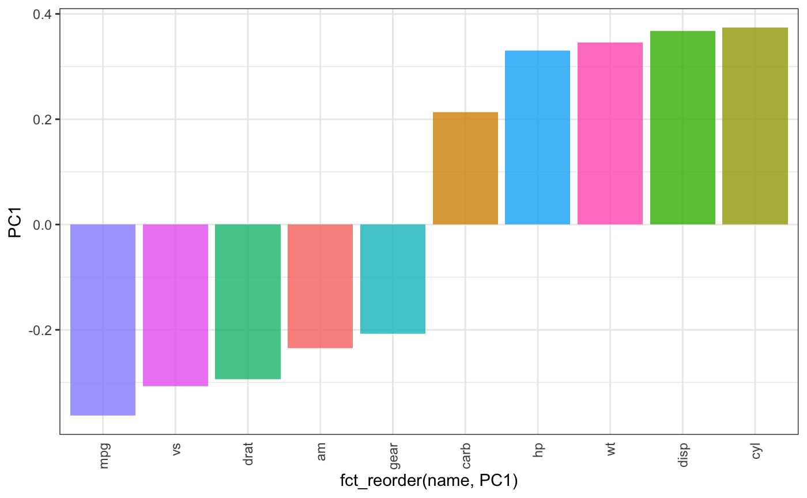

vignettes/pca_inbar.Rmd
pca_inbar.RmdI get this idea from Silge (2018)’s blog to display the result of PCA in an elegant and easily-read way. Moreover, I think it is a good practice to display the data, and show the PC1 represents what kinds of information of a dataset.
library(add2evaluation)
pca_inbar(mtcars)
#> 载入需要的程辑包：Matrix
#> ─ Attaching packages ────────────────────────────── tidyverse 1.2.1 ─
#> ✔ ggplot2 3.1.0 ✔ purrr 0.2.5
#> ✔ tibble 2.1.1 ✔ dplyr 0.8.0.1
#> ✔ tidyr 0.8.2 ✔ stringr 1.4.0
#> ✔ readr 1.1.1 ✔ forcats 0.3.0
#> ─ Conflicts ─────────────────────────────── tidyverse_conflicts() ─
#> ✖ dplyr::between() masks data.table::between()
#> ✖ tidyr::expand() masks Matrix::expand()
#> ✖ dplyr::filter() masks stats::filter()
#> ✖ dplyr::first() masks data.table::first()
#> ✖ dplyr::lag() masks stats::lag()
#> ✖ dplyr::last() masks data.table::last()
#> ✖ purrr::transpose() masks data.table::transpose()
Silge, Julia. 2018. “Supervised Learning in R: Case Studies.” 2018. https://campus.datacamp.com/courses/supervised-learning-in-r-case-studies/get-out-the-vote?ex=9.